Design Principles
just the basics
Unity
When all elements are in agreement and no one part is more important than the whole.
Balance
When elements are distributed in a pleasing arrangement, achieving a state of visual equilibrium.
Symmetry
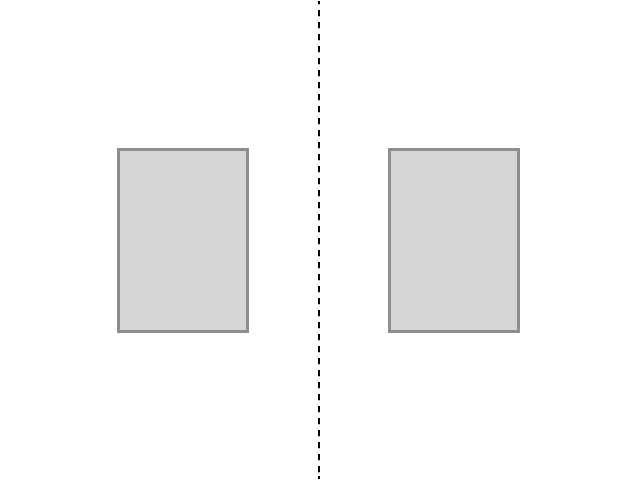
Symmetry
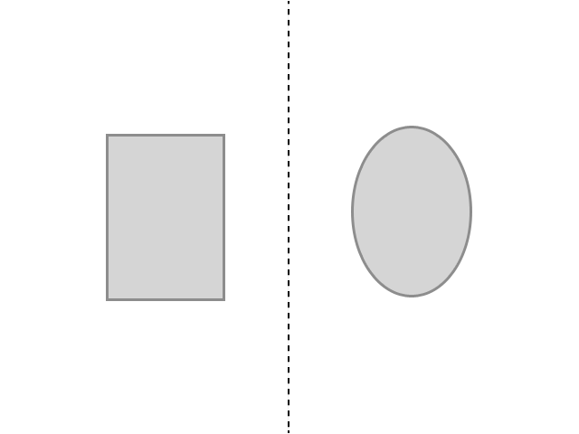
Symmetry
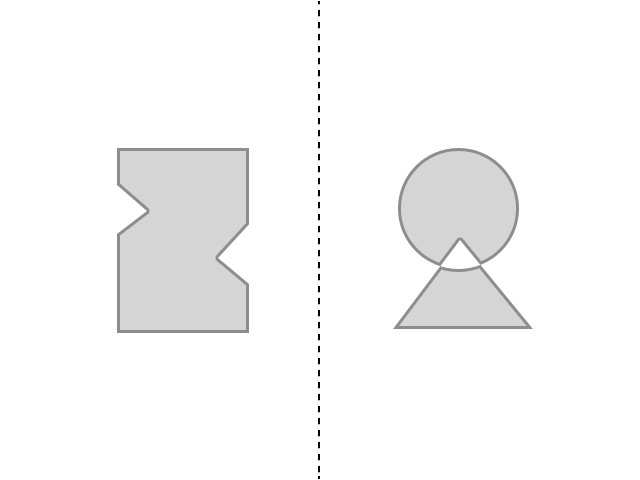
Symmetry
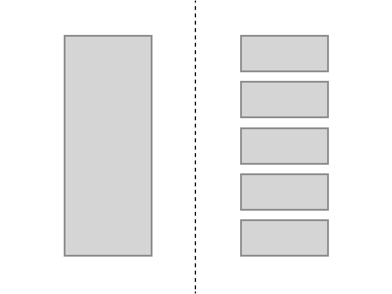
Asymmetry
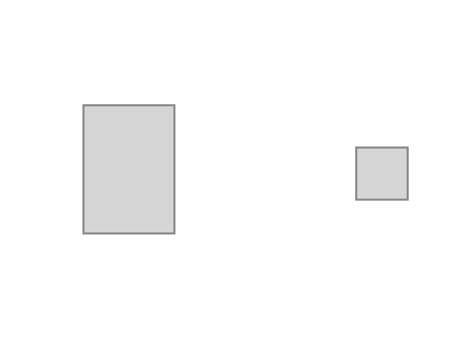
Asymmetry
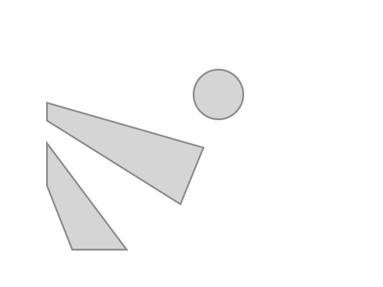
Not just balance
Repetition
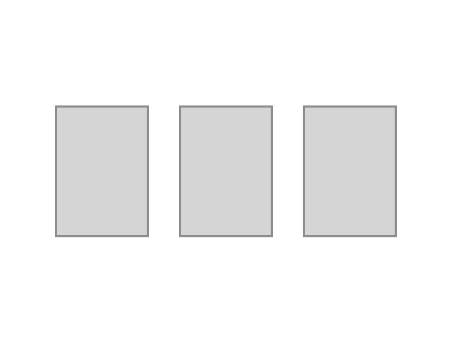
Patterns
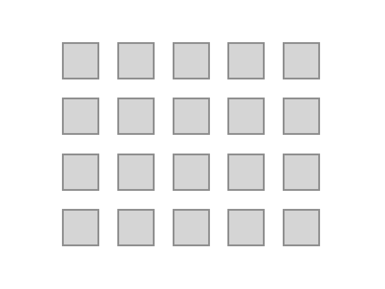
Similarity
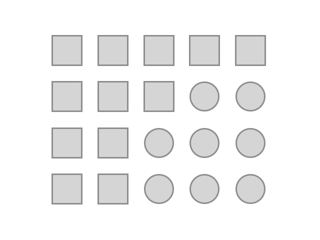
Proximity
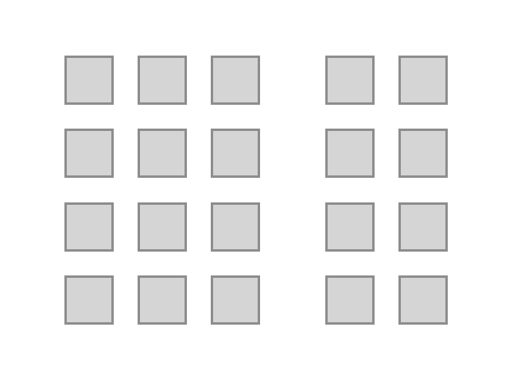
Alignment
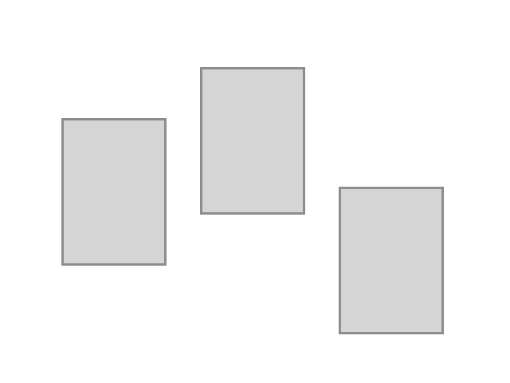
Alignment
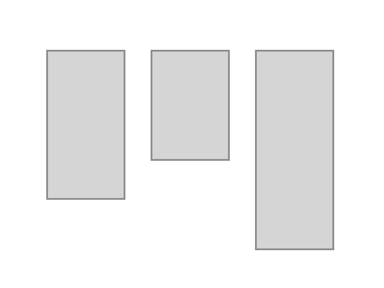
Unity
When all elements are in agreement and no one part is more important than the whole design
…except when it is.
Hierarchy
and
Dominance
Create focal points and draw attention to key elements without sacrificing the unity of the whole.
Contrast
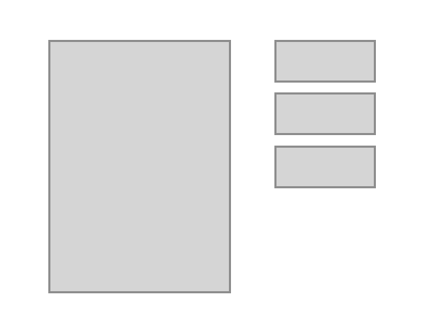
size and proportion
Contrast
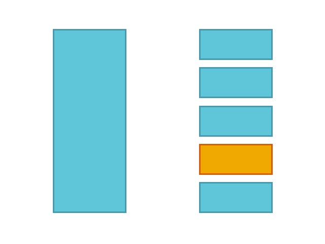
color
Contrast
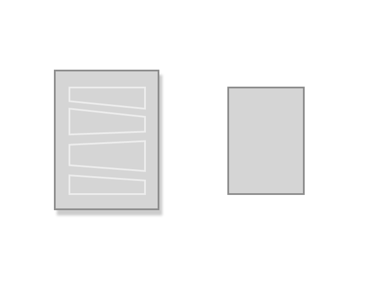
complexity
Contrast
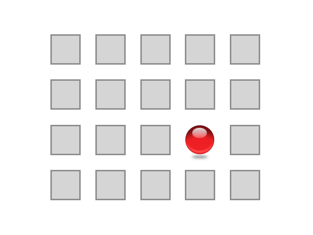
a little of everything
Contrast
creates
Emphasis
Hierarchy
Draw the viewer's attention to the most important content.
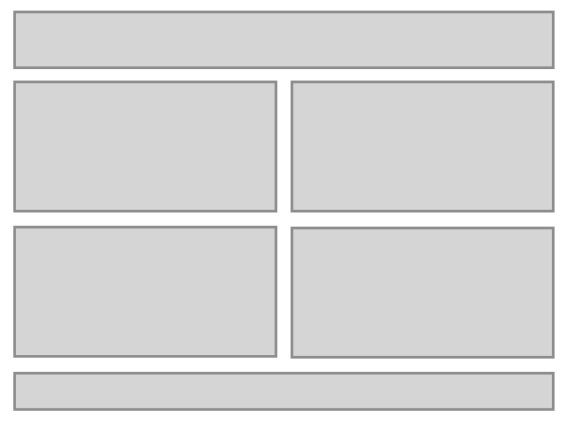
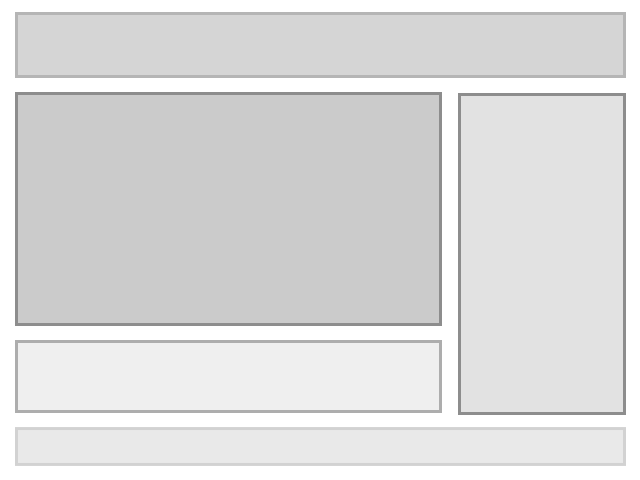
Recap
- Unity
- Balance
- Repetition
- Proximity
- Alignment
- Dominance
- Contrast
- Hierarchy
The End
Next time we'll talk about something else.
Color? Typography?